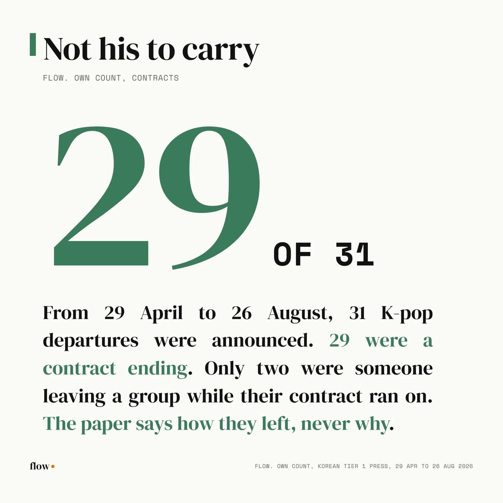
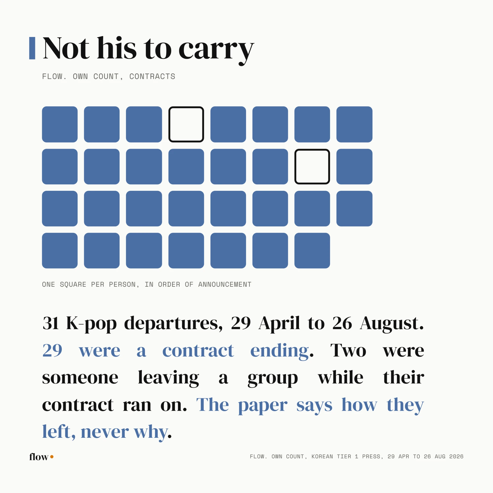
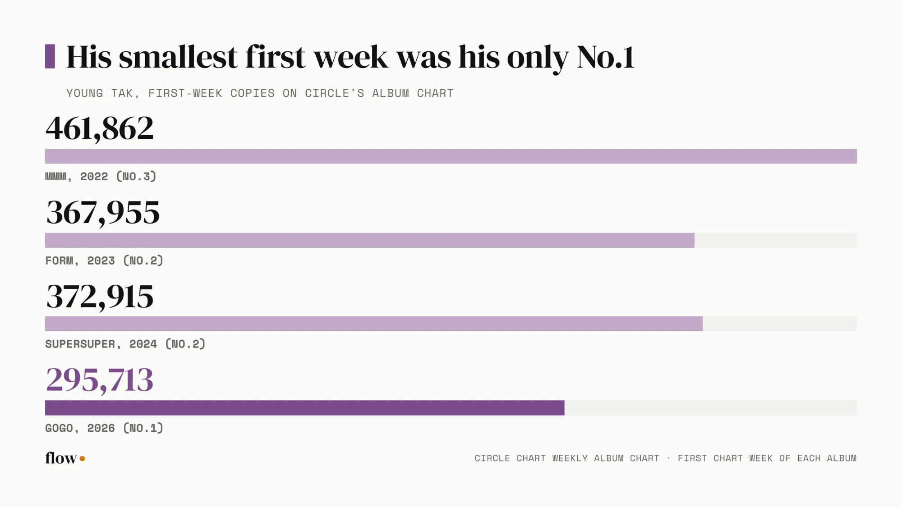

flow.
Newsletter · en anglais · hebdomadaireUne lecture de l'industrie de la K-pop sous l'angle business et données. Une newsletter qui parle aux professionnels comme aux fans intéressés par les insights du marché musical coréen : revenus, contrats, tournées, exportations.
Quelques visuels
Un chiffre, une source, un visuel : trois exemples tirés du numéro #031.



Le système derrière flow.
Le pipeline qui transforme chaque semaine la presse coréenne et les données de marché en faits sourcés et vérifiables.
Mesuré le 25 septembre 2026, base de production
De la source au lecteur
- Collecte21 sources coréennes et internationales, Playwright
- NettoyageDéduplication sémantique, recherche vectorielle
- RésolutionEntités liées entre langues, alias fusionnés
- ExtractionFaits datés, sourcés, avec niveau de confiance
- CurationSélection pondérée par fiabilité, gate de vérification
- Publicationflow. chaque semaine
Sources suivies
Presse coréenne de premier rang : Naver, Daum, Newsen, OSEN, StarNews, Dispatch, TenAsia, Maeil, Korea Herald, Korea Times. Agrégateurs : Soompi, AllKpop, Billboard, Variety, K-gen. Registres publics coréens : DART (dépôts financiers), KRX (cours boursiers), Circle Chart (classements). Commerce extérieur : UN Comtrade, pour les exports physiques liés à la musique.
Ce qui différencie le système
- Un chiffre publié est un fichier, pas une estimation. Chaque unité comptée a sa ligne ; les écarts sont conservés avec leur motif de rejet, jamais lissés.
- Résolution d'identité multilingue à l'échelle. Un artiste a un nom coréen, un nom anglais, parfois plusieurs graphies occidentales : le système les relie à une seule fiche plutôt que de laisser des doublons.
- Traçabilité financière propre à la Corée. Lecture directe des dépôts DART, croisée aux cours KRX, plutôt que reprise de chiffres déjà interprétés par la presse anglophone.
- Alerting sur les pannes silencieuses. Un job qui tourne et ne ramène rien est détecté et remonté, pas seulement un job qui plante.
- Infrastructure propre, sans vendor. Serveur dédié, cron natif, base versionnée : aucune plateforme low-code entre la donnée et la publication.
Rien n'est publié sans source
L'IA collecte, prépare et signale ; la décision de publier reste humaine. Un chiffre maison n'est publiable que s'il vient d'un fichier ligne par ligne, écarts inclus. Une passe de contrôle automatique bloque tout envoi tant que les sources ne sont pas tracées et les doublons écartés. Chaque pièce chiffrée passe ensuite une double vérification, relecture interne et vérification factuelle externe. Quand deux sources de premier rang se contredisent, seule leur intersection est publiée.
Stack
Python 3.12, SQLite en mode WAL, ChromaDB pour la déduplication sémantique, Playwright et BeautifulSoup pour la collecte. Gemini pour l'ingestion, Claude pour la rédaction et la vérification. Un tableau de bord interne en Streamlit, un contrôle distant en Flask, 40 tâches orchestrées par cron natif et services systemd, sur un serveur dédié auto-géré.